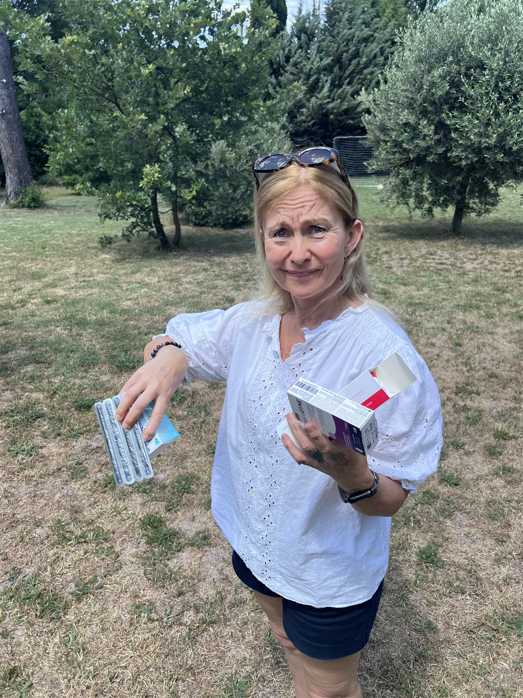

For Women
"Why can't I remember simple words?" "Why am I so tired all the time?" "Why am I suddenly anxious?"It's not just you — and it isn't "just stress".
If you've been quietly asking questions like these, you're in the right place. What's happening to you is real, and it has a name. We turn the actual evidence into plain language — and connect you with a community of women navigating exactly the same thing.

Does this sound familiar?
Many women describe…
- A fog that steals words mid-sentence — names, dates, the thing you walked into the room for
- A tiredness that no amount of sleep seems to touch
- Anxiety arriving out of nowhere, about things that never used to worry you
- A rage that flares over nothing — and shame straight afterwards
- Sensory overload — noise, light and busy rooms suddenly feeling like too much
- Lying wide awake at 3am, night after night
- A quiet loss of confidence, at work and at home
This is hard. You're not imagining it.
None of this means you're broken or "losing it". It's biology — often colliding with the busiest years of your life: work, teenagers, ageing parents, everything at once. Understanding what's happening is the first step towards feeling better.
What you get inside the community
- A monthly, ten-minute evidence brief on menopause and women's health — no jargon, full sources
- Actionable takeaways you can discuss with your own doctor
- A private community of women — questions welcome, judgement not
- Clear labelling of what the evidence supports, and what it doesn't (yet)
- Zero product pushing. We sell knowledge, not supplements.
Our reports are educational and never a substitute for advice from your own healthcare professional.
Community membership
- Hosted on Skool — quick and easy to join
- Monthly evidence brief included
- Cancel anytime
Membership and payment for women run through our Skool community.
Myth vs. evidence
A taste of what lands in your inbox
The common myths, and what the evidence actually says — from our medical researcher, Nicky Draper. Every monthly brief turns dense research into clear, honest answers like these.


From the community
Come and see for yourself
A welcome from inside our Skool community, and a taste of the kind of practical, evidence-based questions we dig into — like: cardio or weights?
Welcome to the Women Unpaused community on Skool.
Cardio or weights? A sample of the questions we take on.
We get it
We've stood in front of that shelf too
Blister packs, boxes, creams — and no clear answer about what actually works, what's safe, or where to start. That confusion is exactly why Health Unpaused exists.
Every monthly brief tells you what the evidence supports, what it doesn't, and what to ask your own doctor about. No product pushing — we sell knowledge, not supplements.
Join the community ↗
In her own words
Built by a woman who lived the problem
I'm peri-menopausal, and I've lived the problem we're solving. I saw countless doctors, had endless scans, listened to 50+ hours of menopause podcasts. I didn't find an easy solution — so I created it.
Become a founding member
We're building Health Unpaused in the open. Join the founding community on Skool — read the briefs first, ask anything, and help shape the reports you receive.
Realistic hope
This won't always feel like this.
We won't promise you a quick fix — nobody honestly can. But this stage does pass, understanding it makes it easier to live through, and you don't have to work it out alone.

Understand your body — without the noise
Join a community of women who get it, and get the evidence that actually helps — for the price of a lunch.
Join on Skool ↗